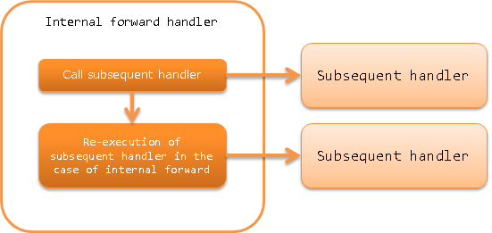

Internal Forward Handler¶
Table of contents
This handler re-executes the subsequent handler with the specified request path when the content in the response from the subsequent handler indicates an internal forward.
Internal forward is used when the transition destination screen is not a simple screen display and options such as check boxes and drop-down lists are acquired from the server. For example, the input screen is not only redisplayed when an error occurs during input check, but also options for the input item is acquired from the server. For details, see Acquire the data to be displayed on the transition destination screen when an error occurs.
This handler performs the following processes.
- Re-execution of subsequent handler during internal forward
The process flow is as follows.
Module list¶
<dependency>
<groupId>com.nablarch.framework</groupId>
<artifactId>nablarch-fw-web</artifactId>
</dependency>
Constraints¶
- Place this handler after the Session Variable Store Handler
- See Configure the transition destination during tampering error for why it should be placed after Session Variable Store Handler
Returns the response that indicates internal forward¶
When a response indicating an internal forward in a business action is returned,
start the content path indicated by the response with forward://.
An example is shown below.
public HttpResponse sample(HttpRequest request, ExecutionContext context) {
// Business process
// Internal forward to initialize the same business action
return new HttpResponse("forward://initialize");
}
Tip
For the status code, compare the during and after forward codes, and use the larger value as the response status code.
An example is shown below.
- If during forward is 200 and after forward is 500, returns 500 to client.
- If during forward is 400 and after forward is 200, returns 400 to client.
Rules for the paths specified for internal forwards¶
Relative and absolute paths can be specified for the forward destination path specified by the internal forward.
- Relative path
- Path starting from the current request URI.
- Absolute path
Path starting from the servlet context name.
For absolute paths, start the path to be specified with
/.
An example is shown below.
If the current request URI is action/users/save, the internal forward destination indicated by the relative and absolute paths below is the same.
// Relative path
new HttpResponse("forward://initialize");
// Absolute path
new HttpResponse("forward:///action/users/initialize");
Internal Request ID¶
The request ID of the forwarding destination is retained in the thread context as an internal request ID during internal forwarding.